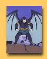
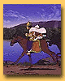
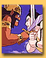

Sri Rama construye junto con Hanuman y los demas monos el puente hacia Lanka.
Duración: 2:36 sec. Peso: 23 MB. Para descargarla has click aqui:

Hanuman encuentra a Sita en el palacio del demonio Ravana.
Duración: 2.13 sec. Peso: 19 MB. Para descargarla has click aqui:
Sita ve a Rama antes del vivaha-yajna -ceremonia de matrimonio-
Duración: 0:29 sec. Peso: 350 KB. Para descargarla has click aqui:


En que ciudad vive el Señor Ramacandra?
Duración: 0:29 sec. Peso: 895KB. Para descargarla has click aqui:
Una mirada al templo Vrinda Kunja...Duración: 0:28 sec. Peso: 639 KB. Para descargarla has click aqui:
Vrinda Kunja de Vrindavan es un lindo jardín. Canción compuesta por Madhava Prakas das. Recomendada!Duración: 2:18 sec. Peso: 35 MG. Para descargarla has click aqui:
Tulasi Kirtan en Vrinda kunja.
Duración: 1:03 sec. Peso: 1.37 MB. Para descargarla has click aqui:

Saludos de Sadhu Maharaja
Duración: 0:15 sec. Peso: 351 KB. Para descargarla has click aqui:
Las Gopis acusan a Krishna de ladron de mantequilla ante madre Yasoda mientras El trata de convencerla de que no ha robado nada. Este es una parte de la pelicula Gopal Krishna.duración: 3:49 sec. Pesa: 40 MG. Para descargarla has click aqui:
Para ver los videos necesitas Windows Media Player. Si no lo tienes has click aqui: